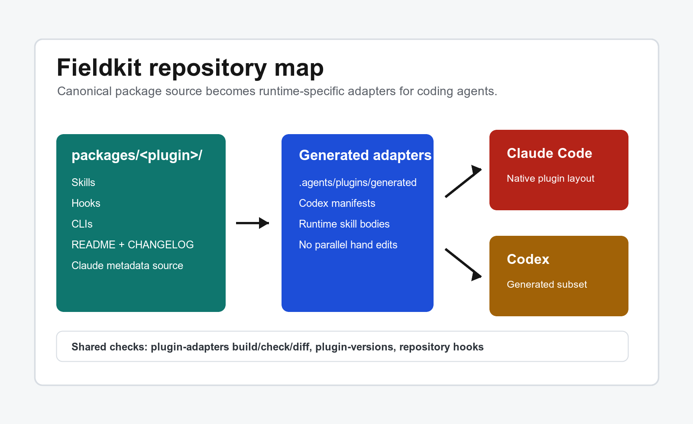

Discipline the workflow
Commit bodies, push policy, worktree lifecycle, single-occupancy locks, and guardrails keep agent sessions from turning local speed into shared mess.
- git-discipline
- bonsai
- dibs
- dont-do-that
Public multi-agent marketplace
Reusable operating gear for Claude Code and Codex: workflow discipline, field missions, peer review, naming doctrine, feedback loops, and generated runtime adapters from one canonical source.
What the kit does
Commit bodies, push policy, worktree lifecycle, single-occupancy locks, and guardrails keep agent sessions from turning local speed into shared mess.
Rover missions, continuation contracts, verification discipline, and prepared loop files give autonomous work a real endpoint.
Peer consultation, opinionated panels, duplication audits, and naming doctrine make another perspective part of the workflow instead of an afterthought.
Feedback routes to hooks, skills, project code, or instruction files, while lightweight capture commands keep irritation cheap and useful.
Repository shape

Each plugin lives under packages/<plugin>/. Claude
metadata remains the source. Codex packages are generated into
.agents/plugins/generated/, so agent-specific runtime
shape does not fork the marketplace by hand.
Plugin catalog
Git workflow skills, repo-aware push policy, and commit/push hooks.
Package sourceGuardrail hooks plus correction skills for common agent reflexes.
Package sourceSingle-occupancy locks so one coding agent owns a directory at a time.
Package sourceGit worktree creation, setup, and teardown behind a safety gate.
Package sourceA field-mission framework with decide, pride, trim, and verify passes.
Package sourceKeepalive, cron heartbeat, wake, and restore for interactive missions.
Package sourcePeer consultation: Claude hands work to Codex, Codex hands work to Claude.
Package sourceOpinionated review panels for software, decisions, and prose.
Package sourceDuplication-audit methodology for code, prose, design systems, and docs.
Package sourceCapture friction now, then repair recurring agent behavior later.
Package sourceRoutes feedback about agent behavior to the strongest durable target.
Package sourceReference material for plugin naming, skill resolution, and adapters.
Package sourceNaming and wording doctrine for code, docs, branches, UI copy, and releases.
Package sourceCopy the core content of the last answer to the macOS clipboard.
Package sourceMarketplace-wide utilities, including /whats-new.
Latest field notes
The duplication-audit methodology now ships from
drydry@laicluse-agent-fieldkit for Claude Code and Codex.
Codex receives the generated subset with compatible runtime behavior instead of inert Claude-only commands.
Claude keeps the full guardrail hook stack; Codex receives
/duh and /just-a-question.
| Package | Latest | Type | User-visible change |
|---|---|---|---|
| git-discipline | v2.0.32 | Changed | After updates, rerun /git-discipline:install-hooks --force to refresh baked hook paths. |
| bonsai | v2.0.21 | Fixed | bonsai create no longer nests a worktree inside another worktree. |
| dibs | v2.0.9 | Added | Universal occupancy hooks enforce one active agent per working directory. |
| drydry | v2.0.0 | Breaking | Install from drydry@laicluse-agent-fieldkit; runtime state moved under LAICLUSE_HOME. |
| rover | v2.0.9 | Fixed | rover is multi-agent again through a host-owned continuation contract. |
| naming-is-hard | v2.0.1 | Added | The naming doctrine now ships from the public Fieldkit marketplace. |
| dont-do-that | v2.0.17 | Changed | Guard placement and per-agent policy now live in a registry. |
| laicluse-agent-fieldkit | v2.0.2 | Fixed | /whats-new is Claude-only until a Codex runtime path exists. |
Full release notes live in the marketplace changelog and in each package under packages/.
Install
claude plugins marketplace add epologee/laicluse-agent-fieldkit
claude plugins install git-discipline@laicluse-agent-fieldkit
claude plugins install rover@laicluse-agent-fieldkit gurus@laicluse-agent-fieldkitcodex plugin marketplace add epologee/laicluse-agent-fieldkit
codex plugin add git-discipline@laicluse-agent-fieldkit
codex plugin add rover@laicluse-agent-fieldkit
codex plugin add gurus@laicluse-agent-fieldkit